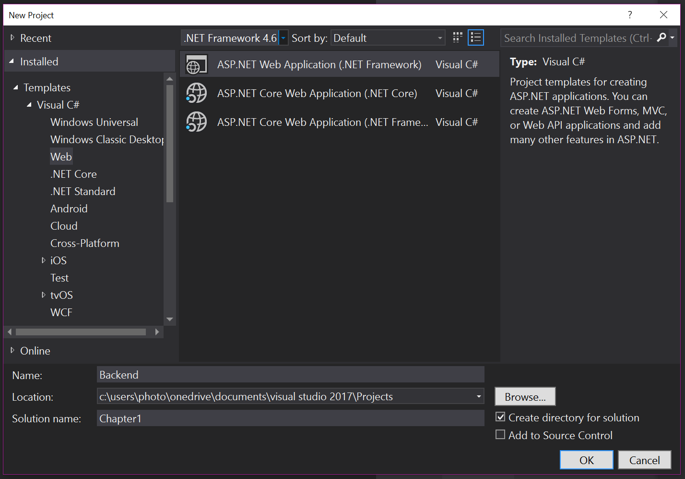
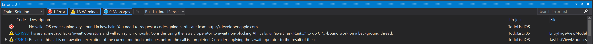

Your First Mobile App¶
There is a lot of detail to absorb about the possible services that the mobile client can consume and I will go into significant depth on those subjects. First, wouldn't it be nice to write some code and get something working? Microsoft Azure has a great first-steps tutorial that takes you via the quickest possible route from creating a mobile backend to having a functional backend. I would like to take things a little slower so that we can understand what is going on while we are doing the process. We will have practically the same application at the end. The primary reason for going through this slowly is to ensure that all our build and run processes are set up properly. If this is the first mobile app you have ever written, you will see that there are quite a few things that need to be set up. This chapter covers the set up required for a Windows PC. If you wish to develop your applications on a Mac, then skip to the next section.
The application we are going to build together is a simple task list. The mobile client will have three screens - an entry screen, a task list and a task details page. I have mocked these pages up using MockingBot.
Tip
Mocking your screens before you start coding is a great habit to get into. There are some great tools available including free tools like MockingBot. Doing mockups before you start coding is a good way to prevent wasted time later on.

Tip
If you are using iOS, then you may want to remove the back button as the style guides suggest you don't need one. Other platforms will need it though, so it's best to start with the least common denominator. It's the same reason I add a refresh button even though it's only valid on Windows Phone!
My ideas for this app include:
- Tapping on a task title in the task list will bring up the details page.
- Toggling the completed link in the task list will set the completed flag.
- Tapping the spinner will initiate a network refresh.
Now that we have our client screens planned out, we can move onto the thinking about the mobile backend.
The Mobile Backend¶
The mobile backend is an ASP.NET WebApi that is served from within Azure App Service: a highly scalable and redundant web hosting facility that supports all the major web languages (like ASP.NET, Node, PHP and Python). Azure Mobile Apps is an SDK (which is available in ASP.NET and Node) that runs on top of Azure App Service.
Creating a Simple Azure Mobile Apps Backend¶
Microsoft Azure has included a comprehensive starter kit template in the Azure SDK. To get started:
- Fire up Visual Studio.
- Add a new project with File -> New -> Project...
-
In the New Project window:
- Open up Templates -> Visual C# -> Web and select ASP.NET Web Application (.NET Framework).
- Enter Backend for the Name and Chapter1 for the Solution name.
- Select .NET Framework 4.6 in the framework dropdown at the top.
- Pick a suitable directory for the Location field.
- Click OK.

-
In the New ASP.NET Web Application window:
- Click Azure Mobile App.
- Do NOT check "Host in the cloud" or any other checkboxes.
- Click OK.
At this point, Visual Studio will create your backend project.
There are a few files of which you should take note. The Mobile Apps SDK is initialized within App_Start\Startup.MobileApp.cs (with the call to the configuration routine happening within Startup.cs). The default startup routine is reasonable but it hides what it is doing behind extension methods. This technique is fairly common in ASP.NET programs. Let's expand the configuration routine to only include what we need:
public static void ConfigureMobileApp(IAppBuilder app)
{
var config = new HttpConfiguration();
var mobileConfig = new MobileAppConfiguration();
mobileConfig
.AddTablesWithEntityFramework()
.ApplyTo(config);
Database.SetInitializer(new MobileServiceInitializer());
app.UseWebApi(config);
}
The minimal version of the mobile backend initialization is actually shorter than the original. It also only includes a data access layer. Other services like authentication, storage and push notifications are not configured.
There is another method in the App_Start\Startup.MobileApp.cs file for seeding data into the database for us. We can leave that alone for now, but remember it is there in case you need to seed data into a new database for your own backend.
Info
We refer to "seeding data" into a database. This means that we are going to introduce some data into the database so that we aren't operating on an empty database. The data will be there when we query the database later on.
The next important file is the DbContext - located in Models\MobileServiceContext.cs. Azure Mobile Apps is heavily dependent on Entity Framework v6.x and the DbContext is a central part of that library. Fortunately, we don't need to do anything to this file right now.
Finally, we get to the meat of the backend. The whole point of this demonstration is to project a single database table - the TodoItem table - into the mobile realm with the aid of an opinionated OData v3 feed. To that end, we need three items:
- A
DbSet<>within theDbContext - A Data Transfer Object (or DTO)
- A Table Controller
When we create the project, a sample of each one of these for the TodoItem table is added for us. You can see the DbSet<> in the Models\MobileServiceContext.cs file, for example. Let's take a look at the DTO and Table Controller for this example table as well. The DTO for the TodoItem table is located within the DataObjects directory:
using Microsoft.Azure.Mobile.Server;
namespace Backend.DataObjects
{
public class TodoItem : EntityData
{
public string Text { get; set; }
public bool Complete { get; set; }
}
}
Note that the model uses EntityData as a base class. The EntityData class adds five additional properties to the class - we'll discuss those in more details during the Data Access and Offline Sync chapter.
Finally, let's look at the table controller for the example TodoItem table. This is located in Controllers\TodoItemController.cs:
using System.Linq;
using System.Threading.Tasks;
using System.Web.Http;
using System.Web.Http.Controllers;
using System.Web.Http.OData;
using Backend.DataObjects;
using Backend.Models;
using Microsoft.Azure.Mobile.Server;
namespace Backend.Controllers
{
public class TodoItemController : TableController<TodoItem>
{
protected override void Initialize(HttpControllerContext controllerContext)
{
base.Initialize(controllerContext);
MobileServiceContext context = new MobileServiceContext();
DomainManager = new EntityDomainManager<TodoItem>(context, Request);
}
// GET tables/TodoItem
public IQueryable<TodoItem> GetAllTodoItems() => Query();
// GET tables/TodoItem/48D68C86-6EA6-4C25-AA33-223FC9A27959
public SingleResult<TodoItem> GetTodoItem(string id) => Lookup(id);
// PATCH tables/TodoItem/48D68C86-6EA6-4C25-AA33-223FC9A27959
public Task<TodoItem> PatchTodoItem(string id, Delta<TodoItem> patch) => UpdateAsync(id, patch);
// POST tables/TodoItem
public async Task<IHttpActionResult> PostTodoItem(TodoItem item)
{
TodoItem current = await InsertAsync(item);
return CreatedAtRoute("Tables", new { id = current.Id }, current);
}
// DELETE tables/TodoItem/48D68C86-6EA6-4C25-AA33-223FC9A27959
public Task DeleteTodoItem(string id) => DeleteAsync(id);
}
}
The TableController is the central processing for the database access layer. It handles all the OData capabilities for us and exposes these as REST endpoints within our WebAPI. This means that the actual code for this controller is tiny - just 12 lines of code.
Info
OData is a specification for accessing table data on the Internet. It provides a mechanism for querying and manipulating data within a table. Entity Framework is a common data access layer for ASP.NET applications.
We can build the project at this point. If Visual Studio hasn't done so already, the missing NuGet packages for Azure Mobile Apps will be downloaded. There should not be any errors. If there are, check the typing for any changes you made.
Building an Azure App Service for Mobile Apps¶
The next step in the process is to build the resources on Azure that will run your mobile backend. Start by logging into the Azure Portal, then follow these instructions:
- Click the big + New button in the top-left corner.
- Click Web + Mobile, then Mobile App.
-
Enter a unique name in the App name box.
Tip
Since the name doesn't matter and it has to be unique, you can use a GUID generator to generate a unique name. GUIDs are not the best names to use when you need to actually find resources, but using a GUID prevents conflicts when deploying, so I prefer them as a naming scheme. You can prefix the GUID (example: chapter1-GUID) to aid in discovery later on. Generally, the first four digits of a GUID are enough to identify individual resources.
-
If you have more than one subscription (for example, you have a trial and an MSDN subscription), then ensure you select the right subscription in the Subscription drop-down.
-
Select Create new under resource group and enter a name for this mobile application.
Resource Groups
Resource groups are great for grouping all the resources associated with a mobile application together. During development, it means you can delete all the resources in one operation. For production, it means you can see how much the service is costing you and how the resources are being used.
-
Finally, select or create a new App Service Plan.
App Service Plan
The App Service Plan is the thing that actually bills you - not the web or mobile backend. You can run a number of web or mobile backends on the same App Service Plan.
I tend to create a new App Service Plan for each mobile application. This is because the App Service Plan lives inside the Resource Group that you create. The process for creating an App Service Plan is straight forward. You have two decisions to make. The first decision is where is the service going to run. In a production environment, the correct choice is "near your customers". "Close to the developers" is a good choice during development. Unfortunately, neither of those is an option you can actually choose in the portal, so you will have to translate into some sort of geographic location. With 16 regions to choose from, you have a lot of choice.
The second decision you have to make is what to run the service on; also known as the Pricing tier. If you Click View all, you will see you have lots of choices. F1 Free and D1 Shared, for example, run on shared resources and are CPU limited. You should avoid these as the service will stop responding when you are over the CPU quota. That leaves Basic, Standard and Premium. Basic has no automatic scaling and can run up to 3 instances - perfect for development tasks. Standard and Premium both have automatic scaling, automatic backups, and large amounts of storage; they differ in features: the number of sites or instances you can run on them, for example. Finally, there is a number after the plan. This tells you how big the virtual machine is that the plan is running on. The numbers differ by number of cores and memory.
For our purposes, an F1 Free site is enough to run this small demonstration project. More complex development projects should use something in the Basic range of pricing plans. Production apps should be set up in Standard or Premium pricing plans.
-
Once you have created your app service plan and saved it, Click Create.
The creation of the service can take a couple of minutes. You can monitor the process of deployment by clicking on the Notifications icon. This is in the top bar on the right-hand side and looks like a Bell. Clicking on a specific notification will provide more information about the activity. Once you have created your app service, the App Service blade will open.
We will also want a place to store our data. This role is taken on by a SQL Azure instance. We could link an existing database if we had one defined. However, we can also create a test database.
Tip
Creating a Test Database through the App Service Data Connections (as I describe here) allows you to create a free database. This option is not normally available through other SQL database creation flows.
Before we can create a database, we need to create a logical server for the database. The SQL Server (the logical server) sets the region and the login credentials for all the contained databases:
- Click Resource groups in the left hand side menu.
- Click the resource group you created.
- Click Add at the top of the blade.
- Enter SQL Server into the search box, then press Enter.
- Click SQL Server (logical server).
- Click Create.
- Enter the information required by the form:
- A server name (which must be unique in the world - this is a great place to use a GUID).
- A username and password for accessing the databases on the server.
- Select the existing resource group.
- Pick the same Location as you did for the App Service Plan.
- Click Create.
Once the deployment has completed, you can move on to creating and linking a database. You can check the status of the deployment by clicking on the icon that looks like a bell in the top banner.
To create and link the database:
- Click Resource groups in the left hand side menu.
- Click the resource group you created.
-
Click the App Service your created.
Tip
If you pinned your App Service to the dashboard, you can Click the pinned App Service instead. It will bring you to the same place.
-
Click Data connections in the MOBILE menu. You can also search for Data connections in the left hand menu.
-
Click Add.
- In the Type box, select SQL Database.
- Click the unconfigured SQL Database link:

- In the Database blade, select Create a new database.
- Enter a name for the database (like chapter1-db).
- Click the Target server box and select the logical server you created earlier.
- Select a Pricing Tier, then click Apply.

- EClick Select to close the SQL Database blade.
- Click the Connection string box.
- Enter the username and password you set up for the SQL logical server.
- Click OK. The username and password will be validated before proceeding.
- Click OK to close the Add data connection blade.
This produces another deployment step that creates a SQL database with your settings and binds it to the App Service. Once complete, the connection MS_TableConnectionString will be listed in Data Connections blade.

Deploying the Azure Mobile Apps Backend¶
Deploying to Azure as a developer can be accomplished while entirely within Visual Studio:
- Right-Click the Backend project, then select Publish....
-
The following will be shown:

If you have an earlier version of Visual Studio, a different screen will be shown. If Azure App Service is not listed, ensure you have the latest version of Azure SDK installed - at least v2.9.
-
Click Microsoft Azure App Service.
- Click Select Existing, then click Publish.
- You may be prompted to enter your Azure credentials here. Enter the same information that you enter to access the Azure Portal.
- In the lower box, expand the resource group that you created and select the app service you created in the portal.
- Click OK.
Visual Studio will open a browser pointing to the root of your Azure App Service. Add /tables/todoitem?ZUMO-API-VERSION=2.0.0 to the end of the URL. This will show the JSON contents of the table that was defined as a table controller in the backend.
Info
You will see the word ZUMO all over the SDK, including in optional HTTP headers and throughout the SDK source code. ZUMO was the original code name within Microsoft for AZUre MObile.
Building The Mobile Client¶
Info
When you compile a Xamarin.Forms application for a specific platform, you are producing a true native application for that platform - whether it be iOS, Android or Windows
Now that the mobile backend is created and deployed, we can move onto the client side of things. Right-Click the solution and select Add -> New Project.... This will bring up the familiar New Project dialog. Select Visual C# -> Cross-Platform -> Cross Platform App (Xamarin.Forms or Native). Give the project a name, then Click OK.
In the New Cross Platform App window, select Blank App, and use Xamarin.Forms as the UI technology, and a Shared Project for the code sharing strategy.
Project creation will take longer than you expect, but there is a lot going on. If you have never created a mobile or UWP project before, you will be prompted to turn on Windows 10 Developer Mode:

Developer mode in Windows 10 allows you to run unsigned binaries for development purposes and to turn on debugging so that you can step through your UWP programs within Visual Studio. Visual Studio may also just bring up the appropriate Settings page where you can turn on Developer mode.
We will also get asked to choose what version of the Universal Windows platform we want to target:
Version 10240 was the first version of Windows 10 that was released to the general public, so that's a good minimum version to pick. In general, the defaults for the Universal Windows Platform choice are good enough.
Xamarin allows us to build iOS applications directly from Visual Studio. For this to work, we must have access to a Mac. This could be anything from a MacBook Air/Pro, to a Mac Mini in a drawer or closet in the office, or maybe even a Mac in the cloud. The Xamarin tools use SSH to connect to the Mac, which must be configured to build iOS apps from Visual Studio.
Tip
If you don't have a Mac and are not interested in building iOS applications, don't give up now! You can cancel through the Mac specific project setup and continue with building a great Android and Universal Windows app. You can also use Visual Studio Mobile Center to build an iOS project. You can delete the iOS specific project after it has been created.
When prompted about the Xamarin Mac Agent, Click OK to get the list of local mac agents:
Highlight your mac (in case there are multiples), then Click Connect.... If your mac is not listed or you are using a Mac in the cloud, then you can always enter the IP address for your mac.
Tip
For more troubleshooting tips, visit The Xamarin Troubleshooting Site.
You will be prompted for your username and password:

Just enter the (real) username and password for your account on your mac and click on Login.
Tip
Apple tries very hard to hide the real username of your account from you. The easiest way to find your mac username is to open up the Finder. The name next to your home icon is the name of your account.
If the connection is successful, you will see a green icon in the Xamarin Visual Studio toolbar area. It may take a minute or two to connect and verify that the mac can be used.
Once the project is created, you will see that four new projects have been created: a common library which you named plus one project for each platform that has been chosen. Since we chose a project with three platforms, we get four projects:
Most of our work will happen in the common library. However, we can introduce platform-specific code at any point. The platform-specific code is stored in the platform-specific project.
There is one final item we must do before we leave the set up of the project. There are a number of platform upgrades that inevitably have to happen. The Xamarin Platform is updated much more often than the Visual Studio plugin - the updates are released via NuGet: the standard method of distributing libraries for .NET applications.
Warn
Although it is tempting, do not include a v1.x version of the Mobile Client. This is for the earlier Azure Mobile Services. There are many differences between the wire protocols of the two products.
You can install the NuGet packages by right-clicking on the solution and selecting Manage NuGet Packages for Solution....

You can generally select all the updates. However, do NOT update the Jwt package (System.IdentityModel.Tokens.Jwt) as this will break the server project. You can update the System.IdentityModel.Tokens.Jwt to the latest v4.x release. Do NOT install a v5.x release.
Info
Android generally has more updates than the other platforms. Ensure that you update the main Xamarin.Forms package and then refresh the update list. This will ensure the right list of packages is updated.
You should also install the Microsoft.Azure.Mobile.Client library in all the client projects.
Building the Common Library¶
There are two parts that we must concentrate on within the common library. The first is the connection to Azure Mobile Apps and the second is in the pages that the user interacts with. In both cases, there are best practices to observe.
Building an Azure Mobile Apps Connection¶
We will rely on interfaces for defining the shape for the class for any service that we interact with. This is really not important in small projects like this one. This technique allows us to mock the backend service, as we shall see later on. Mocking the backend service is a great technique to rapidly iterate on the front end mobile client without getting tied into what the backend is doing.
Let's start with the cloud service - this is defined in Abstractions\ICloudService.cs. It is used for initializing the connection and getting a table definition:
namespace TaskList.Abstractions
{
public interface ICloudService
{
ICloudTable<T> GetTable<T>() where T : TableData;
}
}
The ICloudTable generic interface represents a CRUD interface into a table and is defined in Abstractions\ICloudTable.cs:
using System.Collections.Generic;
using System.Threading.Tasks;
namespace TaskList.Abstractions
{
public interface ICloudTable<T> where T : TableData
{
Task<T> CreateItemAsync(T item);
Task<T> ReadItemAsync(string id);
Task<T> UpdateItemAsync(T item);
Task DeleteItemAsync(T item);
Task<ICollection<T>> ReadAllItemsAsync();
}
}
The ICloudTable<T> interface defines the normal CRUD operations: Create, Read, Update and Delete. However, it does so asynchronously. We are dealing with network operations in general so it is easy for those operations to tie up the UI thread for an appreciable amount of time. Making them async provides the ability to respond to other events. I also provide a ReadAllItemsAsync() method that returns a collection of all the items.
There are some fields that every single record within an Azure Mobile Apps table provides. These fields are required for offline sync capabilities like incremental sync and conflict resolution. The fields are provided by an abstract base class on the client called TableData:
using System;
namespace TaskList.Abstractions
{
public abstract class TableData
{
public string Id { get; set; }
public DateTimeOffset? UpdatedAt { get; set; }
public DateTimeOffset? CreatedAt { get; set; }
public byte[] Version { get; set; }
}
}
As we will learn when we deal with table data, these fields need to be defined with the same name and semantics as on the server. Our model on the server was sub-classed from EntityData and the EntityData class on the server defines these fields.
It's tempting to call the client version of the class the same as the server version. If we did that, the models on both the client and server would look the same. However, I find that this confuses the issue. The models on the client and server are not the same. They are missing the Deleted flag and they do not contain any relationship information on the client. I choose to deliberately call the base class something else on the client to avoid this confusion.
We will be adding to these interfaces in future chapters as we add more capabilities to the application.
The concrete implementations of these classes are similarly easily defined. The Azure Mobile Apps Client SDK does most of the work for us. Here is the concrete implementation of the ICloudService (in Services\AzureCloudService.cs):
using Microsoft.WindowsAzure.MobileServices;
using TaskList.Abstractions;
namespace TaskList.Services
{
public class AzureCloudService : ICloudService
{
MobileServiceClient client;
public AzureCloudService()
{
client = new MobileServiceClient("https://my-backend.azurewebsites.net");
}
public ICloudTable<T> GetTable<T>() where T : TableData
{
return new AzureCloudTable<T>(client);
}
}
}
Ensure you use HTTPS
If you copy the URL on the Overview page of your App Service, you will get the http version of the endpoint. You must provide the https version of the endpoint when using App Service. The http endpoint redirects to https and the standard HttpClient does not handle redirects.
The Azure Mobile Apps Client SDK takes a lot of the pain out of communicating with the mobile backend that we have already published. Just swap out the name of your mobile backend and the rest is silently dealt with.
Warn
The name Microsoft.WindowsAzure.MobileServices is a hold-over from the old Azure Mobile Services code-base. Don't be fooled - clients for Azure Mobile Services are not interchangeable with clients for Azure Mobile Apps.
We also need a concrete implementation of the ICloudTable<T> interface (in Services\AzureCloudTable.cs):
using System.Collections.Generic;
using System.Collections.ObjectModel;
using System.Threading.Tasks;
using Microsoft.WindowsAzure.MobileServices;
using TaskList.Abstractions;
namespace TaskList.Services
{
public class AzureCloudTable<T> : ICloudTable<T> where T : TableData
{
MobileServiceClient client;
IMobileServiceTable<T> table;
public AzureCloudTable(MobileServiceClient client)
{
this.client = client;
this.table = client.GetTable<T>();
}
#region ICloudTable implementation
public async Task<T> CreateItemAsync(T item)
{
await table.InsertAsync(item);
return item;
}
public async Task DeleteItemAsync(T item)
{
await table.DeleteAsync(item);
}
public async Task<ICollection<T>> ReadAllItemsAsync()
{
return await table.ToListAsync();
}
public async Task<T> ReadItemAsync(string id)
{
return await table.LookupAsync(id);
}
public async Task<T> UpdateItemAsync(T item)
{
await table.UpdateAsync(item);
return item;
}
#endregion
}
}
It's important to note here that the Azure Mobile Apps Client SDK does a lot of the work for us. In fact, we are just wrapping the basic interface here. This won't normally be the case, but you can see that the majority of the code for dealing with the remote server is done for us.
Tip
You can use a shorthand (called a lambda expression) for methods with only one line. For instance, the delete method could just as easily have been written as:
public async Task DeleteItemAsync(T item) => await table.DeleteAsync(item);
You may see this sort of short hand in samples.
We also need to create the model that we will use for the data. This should look very similar to the model on the server - including having the same name and fields. In this case, it's Models\TodoItem.cs:
using TaskList.Abstractions
namespace TaskList.Models
{
public class TodoItem : TableData
{
public string Text { get; set; }
public bool Complete { get; set; }
}
}
We have a final piece of code to write before we move on to the views, but it's an important piece. The ICloudService must be a singleton in the client. We will add authentication and offline sync capabilities in future versions of this code. The singleton becomes critical when using those features. For right now, it's good practice and saves on memory if you only have one copy of the ICloudService in your mobile client. Since there is only one copy of the App.cs in any given app, I can place it there. Ideally, I'd use some sort of dependency injection system or a singleton manager to deal with this. Here is the App.cs:
using TaskList.Abstractions;
using TaskList.Services;
using Xamarin.Forms;
namespace TaskList
{
public class App : Application
{
public static ICloudService CloudService { get; set; }
public App()
{
CloudService = new AzureCloudService();
MainPage = new NavigationPage(new Pages.EntryPage());
}
// There are lifecycle methods here...
}
}
We haven't written Pages.EntryPage yet, but that's coming. The original App.cs class file had several methods for handling lifecycle events like starting, suspending or resuming the app. I did not touch those methods for this example.
Building the UI for the App¶
Earlier, I showed the mockup for my UI. It included three pages - an entry page, a list page and a detail page. These pages have three elements - a XAML definition file, a (simple) code-behind file and a view model.
Info
This book is not intending to introduce you to everything that there is to know about Xamarin and UI programming with XAML. If you wish to have that sort of introduction, then I recommend reading the excellent book by Charles Petzold: Creating Mobile Apps with Xamarin.Forms.
I tend to use MVVM (or Model-View-ViewModel) for UI development in Xamarin based applications. It's a nice clean pattern and is well understood and documented. In MVVM, there is a 1:1 correlation between the view and the view-model, 2-way communication between the view and the view-model and properties within the view-model are bound directly to UI elements. In general (and in all my code), view-models expose an INotifyPropertyChanged event to tell the UI that something within the view-model has been changed.
To do this, we will use a BaseViewModel class that implements the base functionality for each view. Aside from the INotifyPropertyChanged interface, there are some common properties we need for each page. Each page needs a title, for example, and each page needs an indicator of network activity. These can be placed in the Abstractions\BaseViewModel.cs class:
using System;
using System.Collections.Generic;
using System.ComponentModel;
namespace TaskList.Abstractions
{
public class BaseViewModel : INotifyPropertyChanged
{
public event PropertyChangedEventHandler PropertyChanged;
string _propTitle = string.Empty;
bool _propIsBusy;
public string Title
{
get { return _propTitle; }
set { SetProperty(ref _propTitle, value, "Title"); }
}
public bool IsBusy
{
get { return _propIsBusy; }
set { SetProperty(ref _propIsBusy, value, "IsBusy"); }
}
protected void SetProperty<T>(ref T store, T value, string propName, Action onChanged = null)
{
if (EqualityComparer<T>.Default.Equals(store, value))
return;
store = value;
if (onChanged != null)
onChanged();
OnPropertyChanged(propName);
}
public void OnPropertyChanged(string propName)
{
if (PropertyChanged == null)
return;
PropertyChanged(this, new PropertyChangedEventArgs(propName));
}
}
}
This is a fairly common INotifyPropertyChanged interface implementation pattern. Each property that we want to expose is a standard property, but the set operation is replaced by the SetProperty() call. The SetProperty() call deals with the notification; calling the event emitter if the property has changed value. We only need two properties on the BaseViewModel: the title and the network indicator.
I tend to write my apps in two stages. I concentrate on the functionality of the app in the first stage. There is no fancy graphics, custom UI widgets, or anything else to clutter the thinking. The page is all about the functionality of the various interactions. Once I have the functionality working, I work on the styling of the page. We won't be doing any styling work in the demonstration apps that we write during the course of this book.
The EntryPage has just one thing to do. It provides a button that enters the app. When we cover authentication later on, we'll use this to log in to the backend. If you are looking at the perfect app, this is a great place to put the introductory screen.
Creating a XAML file is relatively simple. First, create a Pages directory to hold the pages of our application. Then right-Click the Pages directory in the solution explorer and choose Add -> New Item.... In the Add New Item dialog, pick Visual C# -> Cross-Platform -> Forms Blank Content Page Xaml. Name the new page EntryPage.xaml. This will create two files - EntryPage.xaml and EntryPage.xaml.cs. Let's center a button on the page and wire it up with a command. Here is the Pages\EntryPage.xaml file:
<?xml version="1.0" encoding="utf-8" ?>
<ContentPage xmlns="http://xamarin.com/schemas/2014/forms"
xmlns:x="http://schemas.microsoft.com/winfx/2009/xaml"
x:Class="TaskList.Pages.EntryPage"
Title="{Binding Title}">
<ContentPage.Content>
<StackLayout HorizontalOptions="Center"
Orientation="Vertical"
VerticalOptions="Center">
<Button BackgroundColor="Teal"
BorderRadius="10"
Command="{Binding LoginCommand}"
Text="Login"
TextColor="White" />
</StackLayout>
</ContentPage.Content>
</ContentPage>
There are a couple of interesting things to note here. The StackLayout element is our layout element. It occupies the entire screen (since it is a direct child of the content page) and the options just center whatever the contents are. The only contents are a button.
There are two bindings. These are bound from the view-model. We've already seen the Title property - this is a text field that specifies the title of the page. The other binding is a login command. When the button is tapped, the login command will be run. We'll get onto that in the view-model later.
The other part of the XAML is the code-behind file. Because we are moving all of the non-UI code into a view-model, the code-behind file is trivial:
using TodoList.ViewModels;
using Xamarin.Forms;
using Xamarin.Forms.Xaml;
namespace TodoList.Pages
{
[XamlCompilation(XamlCompilationOptions.Compile)]
public partial class EntryPage : ContentPage
{
public EntryPage ()
{
InitializeComponent ();
BindingContext = new EntryPageViewModel();
}
}
}
This is a recipe that will be repeated over and over again for the code-behind when you are using a XAML-based project with MVVM. We initialize the UI, then bind all the bindings to a new instantiation of the view model.
Talking of which, the view-model needs just to handle the login click. Note that the location or namespace is TaskList.ViewModels. I'm of two minds about location. There tends to be a 1:1 relationship between the XAML file and the View Model, so it makes sense that they are stored together. However, just about all the sample code that I see has the view-models in a separate namespace. Which one is correct? I'll go with copying the samples for now. Here is the code for ViewModels\EntryPageViewModel.cs:
using System;
using System.Diagnostics;
using System.Threading.Tasks;
using TaskList.Abstractions;
using Xamarin.Forms;
namespace TaskList.ViewModels
{
public class EntryPageViewModel : BaseViewModel
{
public EntryPageViewModel()
{
Title = "Task List";
}
Command loginCmd;
public Command LoginCommand => loginCmd ?? (loginCmd = new Command(async () => await ExecuteLoginCommand().ConfigureAwait(false)));
async Task ExecuteLoginCommand()
{
if (IsBusy)
return;
IsBusy = true;
try
{
Application.Current.MainPage = new NavigationPage(new Pages.TaskList());
}
catch (Exception ex)
{
Debug.WriteLine($"[Login] Error = {ex.Message}");
}
finally
{
IsBusy = false;
}
}
}
}
This is a fairly simple view-model but there are some patterns here that are worth explaining. Firstly, note the way we create the LoginCommand property. This is the property that is bound to the Command parameter in the Button of our view. This recipe is the method of invoking a UI action asynchronously. It isn't important now, but we will want this technique repeatedly as our UI actions kick off network activity.
The second is the pattern for the ExecuteLoginCommand method. Firstly, I ensure nothing else is happening by checking the IsBusy flag. If nothing is happening, I set the IsBusy flag. Then I do what I need to do in a try/catch block. If an exception is thrown, I deal with it. Most of the time this involves displaying an error condition. There are several cross-platform dialog packages to choose from or you can roll your own. That is not covered here. We just write a debug log statement so we can see the result in the debug log. Once everything is done, we clear the IsBusy flag.
The only thing we are doing now is swapping out our main page for a new main page. This is where we will attach authentication later on.
The next page is the Task List page, which is in Pages\TaskList.xaml:
<?xml version="1.0" encoding="utf-8" ?>
<ContentPage xmlns="http://xamarin.com/schemas/2014/forms"
xmlns:x="http://schemas.microsoft.com/winfx/2009/xaml"
x:Class="TaskList.Pages.TaskList"
Title="{Binding Title}">
<ContentPage.Content>
<StackLayout>
<ListView BackgroundColor="#7F7F7F"
CachingStrategy="RecycleElement"
IsPullToRefreshEnabled="True"
IsRefreshing="{Binding IsBusy, Mode=OneWay}"
ItemsSource="{Binding Items}"
RefreshCommand="{Binding RefreshCommand}"
RowHeight="50"
SelectedItem="{Binding SelectedItem, Mode=TwoWay}">
<ListView.ItemTemplate>
<DataTemplate>
<ViewCell>
<StackLayout HorizontalOptions="FillAndExpand"
Orientation="Horizontal"
Padding="10"
VerticalOptions="CenterAndExpand">
<Label HorizontalOptions="FillAndExpand"
Text="{Binding Text}"
TextColor="#272832" />
<Switch IsToggled="{Binding Complete, Mode=OneWay}" />
</StackLayout>
</ViewCell>
</DataTemplate>
</ListView.ItemTemplate>
</ListView>
<StackLayout HorizontalOptions="Center"
Orientation="Horizontal">
<Button BackgroundColor="Teal"
Command="{Binding AddNewItemCommand}"
Text="Add New Item"
TextColor="White" />
</StackLayout>
</StackLayout>
</ContentPage.Content>
</ContentPage>
Note that some bindings here are one-way. This means that the value in the view-model drives the value in the UI. There is nothing within the UI that you can do to alter the state of the underlying property. Some bindings are two-way. Doing something in the UI (for example, toggling the switch) alters the underlying property.
This view is a little more complex. It can be split into two parts - the list at the top of the page and the button area at the bottom of the page. The list area uses a template to help with the display of each item.
Note that the ListView object has a "pull-to-refresh" option that I have wired up so that when pulled, it calls the RefreshCommand. It also has an indicator that I have wired up to the IsBusy indicator. Anyone who is familiar with the iOS "pull-to-refresh" gesture can probably guess what this does.
The code behind in Pages\TaskList.xaml.cs:
using TodoList.ViewModels;
using Xamarin.Forms;
using Xamarin.Forms.Xaml;
namespace TodoList.Pages
{
[XamlCompilation(XamlCompilationOptions.Compile)]
public partial class TaskList : ContentPage
{
public TaskList ()
{
InitializeComponent ();
BindingContext = new TaskListViewModel();
}
}
}
There is a view-model that goes along with the view (in ViewModels\TaskListViewModel.cs):
using System;
using System.Collections.ObjectModel;
using System.Collections.Specialized;
using System.Diagnostics;
using System.Threading.Tasks;
using TaskList.Abstractions;
using TaskList.Models;
using Xamarin.Forms;
namespace TaskList.ViewModels
{
public class TaskListViewModel : BaseViewModel
{
public TaskListViewModel()
{
Title = "Task List";
RefreshList();
}
ObservableCollection<TodoItem> items = new ObservableCollection<TodoItem>();
public ObservableCollection<TodoItem> Items
{
get { return items; }
set { SetProperty(ref items, value, "Items"); }
}
TodoItem selectedItem;
public TodoItem SelectedItem
{
get { return selectedItem; }
set
{
SetProperty(ref selectedItem, value, "SelectedItem");
if (selectedItem != null)
{
Application.Current.MainPage.Navigation.PushAsync(new Pages.TaskDetail(selectedItem));
SelectedItem = null;
}
}
}
Command refreshCmd;
public Command RefreshCommand => refreshCmd ?? (refreshCmd = new Command(async () => await ExecuteRefreshCommand()));
async Task ExecuteRefreshCommand()
{
if (IsBusy)
return;
IsBusy = true;
try
{
var table = App.CloudService.GetTable<TodoItem>();
var list = await table.ReadAllItemsAsync();
Items.Clear();
foreach (var item in list)
Items.Add(item);
}
catch (Exception ex)
{
Debug.WriteLine($"[TaskList] Error loading items: {ex.Message}");
}
finally
{
IsBusy = false;
}
}
Command addNewCmd;
public Command AddNewItemCommand => addNewCmd ?? (addNewCmd = new Command(async () => await ExecuteAddNewItemCommand()));
async Task ExecuteAddNewItemCommand()
{
if (IsBusy)
return;
IsBusy = true;
try
{
await Application.Current.MainPage.Navigation.PushAsync(new Pages.TaskDetail());
}
catch (Exception ex)
{
Debug.WriteLine($"[TaskList] Error in AddNewItem: {ex.Message}");
}
finally
{
IsBusy = false;
}
}
async Task RefreshList()
{
await ExecuteRefreshCommand();
MessagingCenter.Subscribe<TaskDetailViewModel>(this, "ItemsChanged", async (sender) =>
{
await ExecuteRefreshCommand();
});
}
}
}
This is a combination of the patterns we have seen earlier. The Add New Item and Refresh commands should be fairly normal patterns now. We navigate to the detail page (more on that later) in the case of selecting an item (which occurs when the UI sets the SelectedItem property through a two-way binding) and when the user clicks on the Add New Item button. When the Refresh button is clicked (or when the user opens the view for the first time), the list is refreshed. It is fairly common to use an ObservableCollection or another class that uses the ICollectionChanged event handler for the list storage. Doing so allows the UI to react to changes in the items.
Note the use of the ICloudTable interface here. We are using the ReadAllItemsAsync() method to get a list of items, then we copy the items we received into the ObservableCollection`.
Finally, there is the TaskDetail page. This is defined in the Pages\TaskDetail.xaml file:
<?xml version="1.0" encoding="utf-8" ?>
<ContentPage xmlns="http://xamarin.com/schemas/2014/forms"
xmlns:x="http://schemas.microsoft.com/winfx/2009/xaml"
x:Class="TaskList.Pages.TaskDetail"
Title="{Binding Title}">
<ContentPage.Content>
<StackLayout Padding="10" Spacing="10">
<Label Text="What should I be doing?"/>
<Entry Text="{Binding Item.Text}"/>
<Label Text="Completed?"/>
<Switch IsToggled="{Binding Item.Complete}"/>
<StackLayout VerticalOptions="CenterAndExpand"/>
<StackLayout Orientation="Vertical" VerticalOptions="End">
<StackLayout HorizontalOptions="Center" Orientation="Horizontal">
<Button BackgroundColor="#A6E55E"
Command="{Binding SaveCommand}"
Text="Save" TextColor="White"/>
<Button BackgroundColor="Red"
Command="{Binding DeleteCommand}"
Text="Delete" TextColor="White"/>
</StackLayout>
</StackLayout>
</StackLayout>
</ContentPage.Content>
</ContentPage>
This page is a simple form with just two buttons that need to have commands wired up. However, this page is used for both the "Add New Item" gesture and the "Edit Item" gesture. As a result of this, we need to handle the passing of the item to be edited. This is done in the Pages\TaskDetail.xaml.cs code-behind file:
using TodoList.Models;
using TodoList.ViewModels;
using Xamarin.Forms;
using Xamarin.Forms.Xaml;
namespace TodoList.Pages
{
[XamlCompilation(XamlCompilationOptions.Compile)]
public partial class TaskDetail : ContentPage
{
public TaskDetail (TodoItem item = null)
{
InitializeComponent ();
BindingContext = new TaskDetailViewModel(item);
}
}
}
The item that is passed in from the TaskList page is used to create a specific view-model for that item. The view-model is similarly configured to use that item:
using System;
using System.Diagnostics;
using System.Threading.Tasks;
using TaskList.Abstractions;
using TaskList.Models;
using Xamarin.Forms;
namespace TaskList.ViewModels
{
public class TaskDetailViewModel : BaseViewModel
{
ICloudTable<TodoItem> table = App.CloudService.GetTable<TodoItem>();
public TaskDetailViewModel(TodoItem item = null)
{
if (item != null)
{
Item = item;
Title = item.Text;
}
else
{
Item = new TodoItem { Text = "New Item", Complete = false };
Title = "New Item";
}
}
public TodoItem Item { get; set; }
Command cmdSave;
public Command SaveCommand => cmdSave ?? (cmdSave = new Command(async () => await ExecuteSaveCommand()));
async Task ExecuteSaveCommand()
{
if (IsBusy)
return;
IsBusy = true;
try
{
if (Item.Id == null)
{
await table.CreateItemAsync(Item);
}
else
{
await table.UpdateItemAsync(Item);
}
MessagingCenter.Send<TaskDetailViewModel>(this, "ItemsChanged");
await Application.Current.MainPage.Navigation.PopAsync();
}
catch (Exception ex)
{
Debug.WriteLine($"[TaskDetail] Save error: {ex.Message}");
}
finally
{
IsBusy = false;
}
}
Command cmdDelete;
public Command DeleteCommand => cmdDelete ?? (cmdDelete = new Command(async () => await ExecuteDeleteCommand()));
async Task ExecuteDeleteCommand()
{
if (IsBusy)
return;
IsBusy = true;
try
{
if (Item.Id != null)
{
await table.DeleteItemAsync(Item);
}
MessagingCenter.Send<TaskDetailViewModel>(this, "ItemsChanged");
await Application.Current.MainPage.Navigation.PopAsync();
}
catch (Exception ex)
{
Debug.WriteLine($"[TaskDetail] Save error: {ex.Message}");
}
finally
{
IsBusy = false;
}
}
}
}
The save command uses the ICloudTable interface again - this time doing either CreateItemAsync() or UpdateItemAsync() to create or update the item. The delete command, as you would expect, deletes the item with the DeleteItemAsync() method.
The final thing to note from our views is that I am using the MessagingCenter to communicate between the TaskDetail and TaskList views. If I change the item in the TaskDetail list, then I want to update the list in the TaskList view.
Note that all the code we have added to the solution thus far is in the common TaskList project. Nothing is required for this simple example in a platform specific project. That isn't normal, as we shall see in later chapters.
Building the Client for Universal Windows¶
I tend to start by building the Universal Windows mobile client. I'm using Visual Studio, after all, and I don't need to use any emulator. To build the clients:
- Right-Click the TaskList.UWP (Universal Windows) project, then select Set as StartUp Project.
- Right-Click the TaskList.UWP (Universal Windows) project again, then select Build.
- Once the build is complete, Right-Click the TaskList.UWP (Universal Windows) project again, then select Deploy.
- Click the Local Machine button in your command bar to run the application.
Ignore the warning APPX0108 produced during the build. It warns that your certificate has expired (you don't have one yet). You can still run the application because you have turned Developer mode on in the Windows Settings.
Here are the three screen screens we generated on Windows:
There are some problems with the UWP version. Most notably, the "pull-to-refresh" gesture does not exist, so we will need to set up an alternate gesture. This could be as easy as adding a refresh button right next to the Add New Item button. In addition, there is no indication of network activity - this manifests as a significant delay between the TaskList page appearing and the data appearing in the list.
Aside from this, I did do some styling work to ensure that the final version looked like my mock-ups (with the exception of the UI form of the switch, which is platform dependent). If you want to see what I did to correct this, check out the final version of the Chapter 1 sample on GitHub.
Building for On-Premise
If you want to run your backend using on-premise resources (for example, Azure Stack or a local IIS service), your UWP application will need the Private Networks capability. You can add this in the Package.appxmanifest file. Choose the Capabilities tab and add the required capability.
If you need to build the project, ensure you redeploy the project after building. It's a step that is easy to miss and can cause some consternation as you change the code and it doesn't seem to have an effect on the application. To aid you in this:
- Select Build -> Configuration Manager...
- Set the Active solution platform to Any CPU.
- Uncheck all the boxes under Build and Deploy.
- Check the boxes for TodoList.UWP under to Build and Deploy.
- Click Close.

When you click the Local Machine button to start the application, Visual Studio will automatically build and deploy your app.
Building the Client for Android¶
Building Android with Visual Studio is almost as easy as building the Universal Windows version of the mobile client. First, we need to set the minimum SDK version. Azure Mobile Apps only works with API level 19 or above and the provided template set the minimum SDK version to API level 15. Open the Properties\AndroidManifest.xml file in the TaskList.Android project and update the uses-sdk element:
<?xml version="1.0" encoding="utf-8"?>
<manifest xmlns:android="http://schemas.android.com/apk/res/android">
<uses-sdk android:minSdkVersion="19" />
<application android:label="TodoList.Android"></application>
</manifest>
Once that is done:
- Right-Click the TaskList.Droid project, then select Set as StartUp Project.
- Right-Click the TaskList.Droid project again, then select Build.
Updating Xamarin.Android Support Packages
If you use NuGet to update the referenced packages, ensure all the Xamarin Android support packages are the same version. Your build will fail if this is not the case.
You may see build failures for a variety of reasons. Generally, a search on the Xamarin Forums will turn up the root cause of the failure. Xamarin Android builds seem to have more errors than either Windows or iOS, but they are easily correctable issues with the environment.
In Visual Studio 2017, we use the Google Emulator for Android to test our Android application. Four devices will be defined for you by default:

Select the VisualStudio_android-23_x86_phone emulator.
Disable Hyper-V before using the Google Emulator
The Google Android Emulator is incompatible with Hyper-V. If you see deployment errors, check the output window. You may see a message asking you to disable Hyper-V. Open up a PowerShell prompt with "Run as Administrator" and type bcdedit /set hypervisorlaunchtype off, then restart your computer. When the computer is restarted, Hyper-V will not be running.
If everything is working, you should see the Google Android Emulator display your mobile client:

Note that the task list view is a "light" style and the rest of the app is a "dark" style. This is because the default styling on an Android device is dark. We are using the default styling on two of the pages and specifying colors on the list page. Fortunately, Xamarin Forms allows for platform-specific styling. The final sample has platform-specific styling for the list page.
Building the Client for iOS¶
Finally, we get to the iOS platform. You will need to ensure your Mac is turned on and accessible via ssh, that it has XCode installed (and you have run XCode once so that you can accept the license agreement), and it has Visual Studio for Mac installed.
Use Visual Studio Mobile Center for Mac Builds
If you don't have a Mac handy, you can use Visual Studio Mobile Center to build your iOS version. You will need a signing certificate for this as you will obviously not have access to the iOS Simulator that is available on a Mac.
When you created the projects, you were asked to link Visual Studio to your mac. This linkage is used for building the project. In essence, the entire project is sent to the Mac and the build tools that are supplied with Visual Studio for Mac are used to build the project.
- Right-click the TaskList.iOS project and select Set as StartUp Project.
- Right-click the TaskList.iOS project and select Build.
You knew it was not going to be that easy, right? Here are the errors that I received when building for the first time:

The error about No valid iOS code signing keys found in keychain is because we selected (by default) a package to deploy onto an iPhone and have not signed up for an Apple Developer Account and linked it to our Mac development environment. To fix this, select the "iPhoneSimulator" Configuration:

Once you have selected the iPhoneSimulator configuration, re-build the mobile application. It should work this time. Run the simulator using the normal Visual Studio method. Visual Studio 2017 will connect to the Mac to run the simulator but display the simulator on your PC.
Before long, you should see the following:

At some point, you will need a platform initialization call on all platforms. It's best to add it now. In TaskList.Droid, this should be added in MainActivity.cs and in TaskList.iOS, it's AppDelegate.cs. In each of these files, there is a line that initializes the Xamarin Forms system.
// Android Version
global::Xamarin.Forms.Forms.Init(this, bundle);
// iOS Version
global::Xamarin.Forms.Forms.Init ();
Immediately before this line, you should add the initializer for Azure Mobile Apps. It's important that the Azure Mobile Apps subsystem is initialized prior to Xamarin Forms being initialized and any UI code being called.
Microsoft.WindowsAzure.MobileServices.CurrentPlatform.Init();
This initializer is not required on the UWP project. Once this is done and you have re-built the project, you can see the fruits of your labor. The final product screens look like this:

Some Final Thoughts¶
If you have got through the entire process outlined in this Chapter and built the application for each platform, then congratulations. There are a lot of places where things can go wrong. You are really integrating the build systems across Visual Studio, Android, Xamarin, and XCode.
Fortunately, once these are set up, it's likely that they will continue working and you won't have to think too much about them again. The Android and iOS build tools and simulators will just work.
If you would rather develop code on your mac, the next sectiom is for you - it gets into the nitty gritty of developing the exact same app, but using Visual Studio for Mac instead.
The following 7 chapters each take one aspect of the cloud services that can be provided to mobile apps and explores it in detail, using an Azure Mobile App as a beginning. You can jump around at this point, but be aware that we expect you to cover these topics in order. If you do the data chapter before covering authentication, it's likely you will have missed important functionality in your app to complete the work.